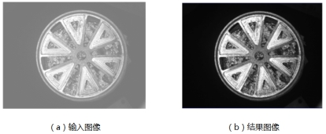
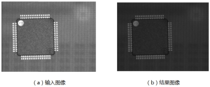
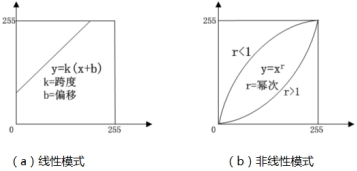

对比度转换是常用的图像预处理方法之一，主要任务是调节灰度图像的亮度来调节图像的整体对比度（增加或减小）。


| 分类 | 参数名称 | 参数描述 |
|---|---|---|
| 属性窗口 | 转换方法 | 主要有线性变换和非线性变换。 |
| 跨度值 | 用于设置线性变换的参数，见基本原理，相当于一次函数的斜率。 | |
| 偏移值 | 用于设置线性变换的参数，见基本原理。 | |
| 幂次 | 用于设置非线性变换的参数，见基本原理，相当于N次函数的N。 | |
| 图像窗口 | 输入图像 | 进行对比度转换的输入图像。 |
| 数据链 | 输入图像 | 进行对比度转换的输入图像。 |
| 高级界面 | 无 | 无 |
| 分类 | 参数名称 | 参数描述 |
|---|---|---|
| 监视窗口 | 输入图像 | 进行对比度转换的输入图像。 |
| 输出图像 | 对比度转换后的输出图像。 | |
| 执行结果 | 工具执行结果。 | |
| 执行时间 | 工具执行时间。 | |
| 图像窗口 | 输出图像 | 对比度转换后的图像。 |
| 执行结果 | 显示工具执行结果，执行成功显示“OK”，执行失败显示“NG”，同监视窗口的执行结果参数。 | |
| 数据链 | 输出图像 | 对比度转换后的图像。 |

对比度转换工具的实质是对图像进行灰度变换，包括两种模式：线性模式（对应线性变换）和非线性模式（对应非线性变换），基本原理如图3所示。线性变换是将像素灰度按照一定的跨度和偏移量进行转换，非线性变换（即伽马变换）则根据不同幂次值所确定的曲线进行转换。
| 应用场景 | 想达到的效果 | 需要调整的参数 |
|---|---|---|
| 对比度适中，图像整体偏亮 | 调低整体亮度 | 调整b为正值 |
| 对比度适中，图像整体偏暗 | 调高整体亮度 | 调整b为负值 |
| 对比度低，图像偏暗 | 调高亮度，增加对比度 | 调整k值，使k值大于1 |
| 对比度适中，图像整体偏亮 | 调低整体亮度 | 调整b为正值 |
| 对比度适中，图像整体偏暗 | 调高整体亮度 | 调整b为负值 |
| 对比度低，图像偏暗 | 调高亮度，增加对比度 | 调整k值，使k值大于1 |
参见“\Samples\对比度变换相关.gvp”。